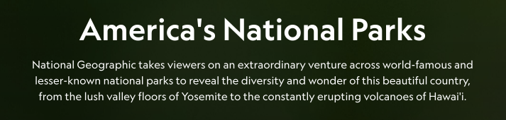
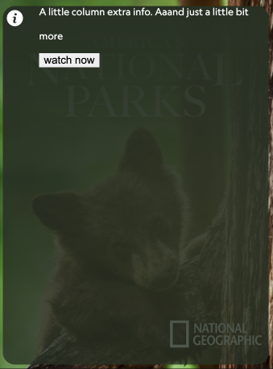
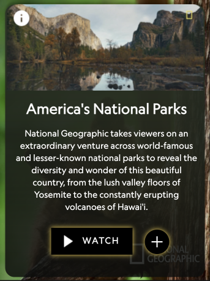

OVERVIEW
Using HTML, CSS, and Javascript to create a micointeraction on the
National Geographic Browsing page that gives users quick access to
quick information about a TV show.
PROBLEM
Currently, the only microinteraction on the National Geographic
Browsing page is when you hover, the cursor changes to a pointer.
When browsing shows, it is almost completely unnoticeable that these
cards are clickable. There is nothing exciting about interacting with
this page, and I want to change that.
GOAL
Enhance the National Geographic browsing experience by adding
microinteractions that bring joy and provide useful information to users.
PROCESS
1 - COMPETITOR RESEARCH
I started by looking at what else is out there. How do other websites
solve this issue?
 Hulu
Hulu
 PBS
PBS
When you hover on a hulu tv show, a border appears to emphasize
which you are hovering on, the image darkens, and a quick summary
of the show rises up beneath the title.
When you hover on a pbs tv show, an information button appears as
well as the words “preview show”.
I was inspired by the solutions these websites implemented to give
feedback to the users when browsing tv shows, and I wanted to bring
some of these elements into my own design.
2 - ALPHA
The first step was to figure out what I want to happen when the users
hover on a card. I ended up designing this first step to be when a user
hovers on the tv show, the image zooms in and a white glow appears around
the outside.

This helped make it more engaging and apparent that the user is hover
over a specific show
This was built using only HTML & CSS and you can interact with the alpha build here: https://christinaleisen.com/idm241/alpha/build/
3 - BETA
For the next step I decided to implement an information button similar to pbs, but when you hover on that, more information appears similar to what I noticed from hulu, but in an overlay box instead.In this information overlay, I also included a “watch now” button so users can easily start watching the show without having to click into the details page and find it.
You can interact with the beta build here: https://christinaleisen.com/idm241/beta/build/
4 - DESIGN INSPIRATION
Because my beta build information overlay contained only filler text and an unstyled HTML button, I needed to look back at the National Geographic site to see what kinds of styles they use that I can implement.When clicking into a TV show on their site, here are some things I paid attention to:  The title is displayed in a very large font and centered, along with the description in small font.
Also, the background of this page consists of a mixture of dark green and black, so I took inspiration from that for the color of the information overlay. There is an add to my list button that I thought could be a good thing to have quick access to in the information overlay. Their logo consists of yellow, black, and white, so I wanted to incorporate that as well.
5 - FINAL
Here is a comparison between the Beta and the Final where you can really see the design inspiration take action:

Beta

Final
When building the microinteractions before this point, I had only used HTML & CSS, but I quickly learned I needed to add Javascript to my project in order to correctly implement a plus to checkmark microinteraction.
To experiment in a clean workspace I took my idea to codepen, and this is where I was able to work with a trial and error approach without the possibility of ruining my other code.
SOLUTION
Screen recording of the final set of microinteractions:
Although this example only shows the interaction of one card, when implemented in the actual environment, there would be multiple of these cards in a row as shown in the hero image at the top of the page.
You can interact with the final build here: https://christinaleisen.com/idm241/final/build/
RESULT
With these new microinteractions, users are now more engaged when browsing for a show on the National Geographic website. They also are able to access useful information quickly which makes their overall experience more efficient.
©Image is curtesy of National Geographic, https://www.nationalgeographic.com/tv/